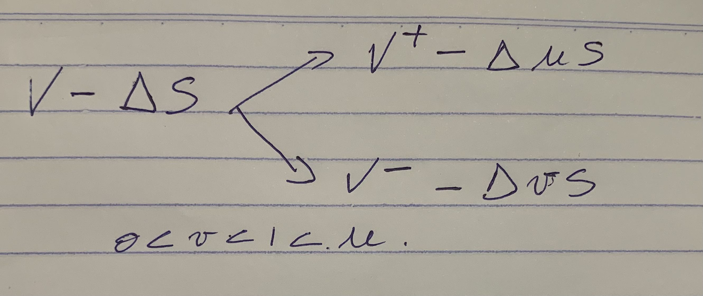

flowchart LR 100 --> 103 100 --> 98
Binomial models
The idea is to develop an intuition for delta hedging and risk-neutrality when valuing an option.
- S is the stock price at the start (time \(t=0\))
- \(\delta t\) is a one increment of time (one unit of time)
- \(u\) is the factor when stock price rise
- \(v\) is the factor when stock price fall
- \(0<v<1<u\)
- \(V\) is the option value at time \(t=0\)
- \(V^+\) is the option value at expiration when stock is ITM (case of a call option)
- \(V^-\) is the option value at expiration when stock is OTM (case of a call option)
Delta hedging and no-arbitrage
Now we are going to introduce \(\Delta\) as the amount of stock to hedge (a percentage of a stock) to be risk-free. Because the portfolio is risk-free it must return the risk-free rate to prevent arbitrage.
We can model our stock and option as part of a portfolio (we call it \(\Pi\)). Hence, \[\Pi = V - \Delta \cdot S\] At this stage, we are assuming that the probability to go up or down is the same (it’s basically irrelevant in this case).

If we want to hedge the stock to be risk-free, then at expiration we should have this equation
\[V^+ - \Delta us = V^--\Delta vs\] Solving for \(\Delta\), we get:
\[\Delta = \frac{V^+-V^-}{(u-v)S} = \frac{\text{range of options payoff}}{\text{range of asset prices}} \tag{1}\]
In other words, we could see \(\Delta\) as the rate of change of the option price in function of the stock price. \(\Delta = \frac{\partial{V}}{\partial{S}}\)
Once we found \(\Delta\), we could find \(V\) by just making today’s value of the trade = tomorrow’s value of the trade (at expiration). Just solve for \(V\) \[V - \Delta S = V^- - \Delta vS\] or \[V - \Delta S = V^+ - \Delta uS\] which ever is easier to calculate.
Now, of course, cash is not free and there is a time value associated to it. In that sense, today’s value for the trade should be equal a discounted value of tomorrow’s trade value (at expiration).
The thinking is that if we want to hedge to be risk-free, it should return the risk-free rate otherwise there is an arbitrate opportunity. \[\Pi = V - \Delta S = \frac{1}{1+r \delta t} \left(V^- - \Delta vS \right)\]
- \(r\) is the value of the risk-free asset
- we are dealing with annualized values, if assets expires in one month and risk-free asset is let’s say 3%, we would multiply 3% by 21 days or \(0.03 \cdot \frac{21}{252}\)
Using our value of \(\Delta\) from Equation 1, we can isolate \(V\) as \[V = \left(\frac{V^+-V^-}{u-v} \right) + \frac{1}{1+r \delta t} \left(V^- - \Delta vS \right) \tag{2}\]
With delta-hedging, we say that the portfolio is deterministic (aka risk-free)
Example
A stock is trading at $100. A call option with strike price of $100. Stock can either go to $103 or $98.
- \(V^+ = 3\)
- \(V^- = 0\)
- \(\Delta = \frac{3-0}{103-98} = \frac{3}{5}\)
- \(V - \Delta S = V^+ - \Delta us\), plugging the value from above we get \(V = \$1.2\)
The Risk-Neutral
Using the same idea as earlier and introducing some probabilities. \(p'\) is the risk-neutral probability.
flowchart LR S -- p' --> uS S -- 1-p' --> vS
From a probabilistic perspective we could write: \[S = p'uS + (1-p')vS\] Or in the presence of a risk free asset, \[S = \frac{1}{1+r \delta t} \left(p' uS + (1-p')vS \right)\]
We could isolate \(p'\) in this last equation: \[s + s r \delta t = p' u s + vs - p'v s\] \[p' = \frac{s + s r \delta t - vs}{us - vs}\] \[p' = \frac{1+r \delta t - v}{u-v} \tag{3}\]
flowchart LR V -- p' --> V+ V -- 1-p' --> V-
To find \(V\): \[V = p' V^+ + (1-p') V^-\]
Interesting to note that the option price \(V\) is like an expectation (the sum of the probability) and \(p'\) is from Equation 3
Actually, we should also include the discounted factor (V is the present value of the expectation): \[V = \frac{1}{1 + r \delta t} \cdot \left( p' V^+ + (1-p') V^- \right) \tag{4}\]
Mixing real-world and risk-free world
Now if we collide both world: the real-world with drift and volatility (Equation 2) and the risk-free world (Equation 4) with \(p'\): we can set up this 2 equations: One for the expected mean rate of change of prices and another for the variance of these rate of change.
\[ \begin{equation} \begin{cases} \mu S \delta t = puS+(1-p)vS-S \\ \sigma^2S^2dt = S^2 (p \cdot [u-1-(pu + (1-p)v-1)]^2 + (1-p) \cdot [v-1-(pu + (1-p)v-1)]^2) \end{cases} \end{equation} \]
(TODO re-write these 2 equations)
2 equations and 3 unknowns, we can choose a solution (the prettiest one!) among the infinitely many:
- \(u = 1 + \sigma \sqrt{\delta t}\)
- \(v = 1 - \sigma \sqrt{\delta t}\)
- \(p = \frac{1}{2} + \frac{\mu \sqrt{\delta t}}{2 \sigma}\)
- \(p' = \frac{1}{2} + \frac{r \sqrt{\delta t}}{2 \sigma}\) \(p'\) is the risk-neutral probability.
The binomial tree
- After one time step \(\delta t\) our stock, initially at \(S\) will either be at \(uS\) or \(vS\).
- After two time steps, the stock will either be at \(u^2S\) or \(uvS\) or \(v^2S\)
- After three time steps, the stock will either be at \(u^3S\) or \(u^2vS\) or \(uv^2S\) or finally \(v^3S\)
- etc.
A bit of a crude representation using Geogebra
Using the equations from the previous sections, we can now create a function to price the value of an option.
calculate_option_price <- function(spot, strike, rfr, sigma, time, steps) {
dt = time/steps # get delta_t
u = 1 + sigma * sqrt(dt) # multiplying factor when asset rise
v = 1 - sigma * sqrt(dt)
p_prime = 0.5 + (rfr * sqrt(dt)/(2*sigma))
discount_factor = 1 / (1 + rfr * dt)
# Calculating vector of prices at maturity
s = rep(0, steps+1) # initialize a vector for prices at maturity - (terminal nodes on the trees)
s[1] = spot * v^steps # #initialize the first end-price - (the most bottom right node of the tree)
for (i in 2:(steps+1)) {
s[i] = s[i-1] * u/v # this is the trick: to go up one leave = going back one step and then up
}
# Calculating vector of options values at maturity
opt = rep(0, steps + 1)
for (i in 1:(steps+1)) {
opt[i] = max(0, s[i] - strike)
}
# We have now to work backward and up in the trees (from bottom right and up)
# We know the final option value.
# We need know to calculate the options in the intermediates nodes
for (i in steps:1) {
for (j in 1:i) {
opt[j] = discount_factor * (p_prime * opt[j+1] + (1 - p_prime)*opt[j])
}
}
#print(glue::glue('Asset price for each time step:', s))
#print(glue::glue('Option price for each time step: ', opt))
return(opt)
}Let’s try our function to get some results
calculate_option_price(spot = 100, strike = 100, rfr = 0.03, sigma = 0.1, time = 1, steps = 4)[1] 5.415051 8.117623 11.822154 16.506917 21.550625Arbitrage
Put-Call parity
- Put-call parity shows the relationship that has to exist between European put and call options that have the same underlying asset, expiration, and strike prices.
- Put-call parity states that simultaneously holding a short European put and long European call of the same class will deliver the same return as holding one forward contract on the same underlying asset, with the same expiration, and a forward price equal to the option’s strike price.
- An arbitrage opportunity exists when the P-C parity is violated.
- The P-C parity is defined by \[C + PV(x) = P + S\]
- C = price of the European Call option
- P = price of the European Put Option
- S = Spot price of underlying asset (current market value of asset)
- PV(x) = Present-Value of the strike price (discounted strike price from expiration)
- Another way to see the relationship: \[P-C = PV(x) - S\]